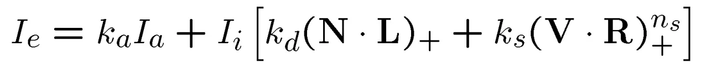

一、概述
Monte Carlo Path Tracing ，材质使用 Phong 模型。
二、使用方法
仅需引入头文件 ray_tracing.h。
Model car("scenes/car/car.obj"); // 加载模型，支持 obj 和 mtl，贴图支持 bmp 和 hdr
Obj car1(car); // 从模型实例化一个物体，支持多物体
car1.set_pose(glm::mat4x4(1.0), 1.0); // 设置物体姿态（齐次变换矩阵）和缩放，支持运行中调整
Render renderer(1920, 1080); // 初始化渲染器
renderer.add_obj(car1); // 添加要渲染的物体
// 设置相机，支持运行中调整
renderer.set_camera(glm::dvec3(8.22, -0.61, -9.8),
glm::dvec3(7.514, -0.702, -9.097),
glm::dvec3(-0.065, 0.996, 0.065), 45);
int samples = renderer.render(); // 渲染并返回当前采样数。多次调用累计渲染同一帧。方便保存进度。
// 结果保存为 bmp 图片
Bitmap results(1920, 1080, renderer.get_framebuffer());
results.SaveFile("results/" + to_string(samples) + ".bmp");
三、程序细节
1. 文件读取
.mtl文件使用正则表达式解析，格式要求宽松.obj文件行数过多，直接用stringstream解析，不能有多余的空格。进行了一定的多线程加速（顶点，法向量，纹理坐标，面 4线程加速）.bmp加载代码来自 tinyrenderer.hdr加载代码作者 Igor Kravtchenko
2. 坐标变换与构建 BVH 树
与传统渲染器不同，光线追踪只需将片元变换到世界坐标系，这部分比较简单
BVH 构建直接按数量对半分，也比较简单，只是很难保证构建出比较平衡的树
3. 光线求交
光线与 BVH 求交，得到一组包围盒
将包围盒按光线进入时间前后排序
对于包围盒中的每一个片元，对光线进行求交
如果已经命中一个片元，则之后进入的包围盒不再需要求交。
4. 递归采样
如果光线路径碰撞次数大于一定值，返回黑色
如果光线没有碰撞片元，返回 skybox 对应颜色
如果光线碰到片元，按材质文件定义计算出的反射、漫反射、折射概率，选择方向，递归求解，再根据自发光和系数计算当前颜色并返回。
5. skybox 天空球
直接根据光线方向在球坐标系中的两个角度 \(\theta \in [0,\pi]\) , \(\phi \in [0, 2\pi]\) 当成纹理坐标采样，与位置无关
可绕 \(z\) 轴旋转一定角度，视具体场景而定
6. BRDF 渲染方程的蒙特卡洛采样
采样数为 1， 即直接返回采样得到的光强
直接将漫反射和高光反射的系数，作为对应方向上的概率分布进行采样，这样消掉了采样方程中的系数，只要将每个像素每条光线结果加起来求平均即可。相当于根据预期进行重要性采样。
漫反射只跟光照入射角度有关，入射角越大，则越暗。设 \(u_1, u_2\) 为 0 到 1 的均匀分布，在法向量球坐标系中采样方向的 PDF 为 \(\arccos(\sqrt{u_1}, 2\pi u_2)\)
高光反射在反射光坐标系中的 PDF 为 \(\arccos(u_1^{\frac{1}{n+1}}, 2\pi u_2)\)
材质漫反射、折射、散射概率计算：材质文件中 Ks, Kd, 以及自定义的折射系数 Kr 的 RGB 的最大值。如果加起来大于 1， 则归一化。另外 Ks, Kd, Kr 还要除以对应的概率，从而保证采样正确。
7. hdr 转 ldr
渲染器采样基于物理的光强定义，最后需要转换到 RGB 256。这里使用 \(1-e^{- lum * a}\) 作为 Tone Mapping。其中 \(lum\) 是可调的全局光强信息，\(a\) 是输入光强。
8. 多线程均衡负载
由于场景固定，每个像素点的采样光线路径几乎也是固定的，如果直接在图片的长宽方向上进行并行加速，会造成某些线程提前结束而闲置的情况。因此这里将像素次序打乱，使得每个线程处理一组随机的像素，避免了浪费线程的情况。
四、场景展示
CPU：Ryzen 5 3600 6c12t@3.9Ghz
1. Cornell Box
深度：10；光线数：10000；分辨率：1080x1080；渲染时间：3h 左右
材质参数有所调整，主要是加强灯光，提高 Ns
相比于参照结果，地面上和墙上出现了某种投影
光源面积小，噪点多
2. Car
深度：8；光线数：20000；分辨率：1920x1080；渲染时间：15h 左右
材质有所调整
场景简单，skybox 光源，1000 采样后图像几乎无变化
深度：9；光线数：15000；分辨率：1920x1080；渲染时间：10h 左右
材质有所调整，玻璃增加透射
1000 采样后图像几乎无变化
未在 skybox 中找到参考图片的背景，所以自己选了一个相近的角度。可能贴图路面未与背景路面重合，不过影响不大
3. Dining room
深度：10；光线数：7000；分辨率：1920x1080；渲染时间：4h 左右
材质有所调整，玻璃增加透射
未提供贴图，场景较暗
4. Dining room +
深度：10；光线数：17000；分辨率：1920x1080；渲染时间：20h 左右
增加一颗玻璃球，模拟凸透镜成像
场景光源大，采样效率高，效果比较好
5000 采样后只有轻微噪点
5. Dining room + texture
素材更新后补做，贴图 + skybox
深度：10；光线数：12000；分辨率：1920x1080；渲染时间：20h 左右

6. Dining room 4k
素材更新后补做
深度：10；光线数：3300；分辨率：3840x2160；渲染时间：20h 左右